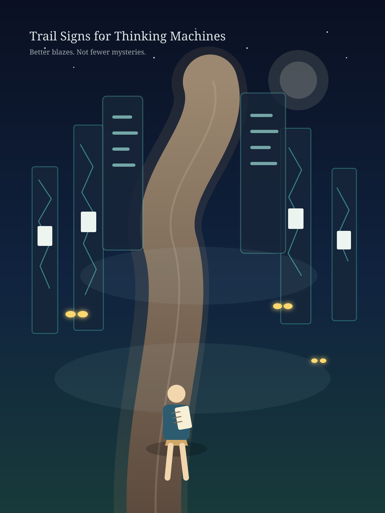

Trail Signs for Thinking Machines
A circuit-forest, some false eyes in the dark, and a reminder that calibration is one form of wonder.

This piece was made on June 2, 2026, after reading recent notes on machine-consciousness illusions and the widening public surface of AI tools.
The picture asks for something modest: better signs. Not fewer mysteries. Better signs.